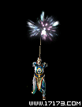
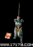
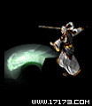
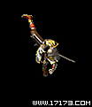
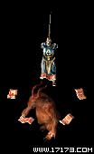
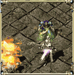
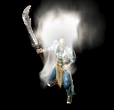
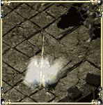
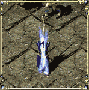

 |
道士的具代表性的魔法。治愈术可以恢复自己或他人的体力。
- 1等级 : 7级开始可以修炼
- 2等级 : 9级开始可以修炼
- 3等级 : 11级开始可以修炼 |
|
治愈术
|
 |
虽然道士具有很多神秘的魔法，但是基本的攻击离不开剑。精神力战法含道士武功的精华，提高命中率。
- 1等级 : 8级开始可以修炼
- 2等级 : 10级开始可以修炼
- 3等级 : 12级开始可以修炼 |
|
精神力战法
|
 |
道士不仅会制作草药，还可制毒。将道士的这种能力升华为武功，就是施毒术。目前只有两种毒药，一种可以降低低人的防御力，一种可以消耗敌人的体力。不过，今后会增加毒药种类。
- 1等级 : 12级开始可以修炼
- 2等级 : 14级开始可以修炼
- 3等级 : 16级开始可以修炼 |
|
施毒术
|
 |
将具有爆发力的护身符发向敌人的魔法。虽然攻击力没有法师强大，但可在远距离攻击或引诱敌人，与其它魔法相结合使用，会得到多样效果。
- 1等级 : 13级开始可以修炼
- 2等级 : 15级开始可以修炼
- 3等级 : 17级开始可以修炼 |
|
灵魂火符
|
|
|
古人在与邪恶的怪物进行战斗过程中创建的魔法。将体内的内功凝聚起来向外放射，威力虽不大，但是不会消耗护身符，对付死者系列的怪物很有效。
- 1等级 : 14级开始可以修炼
- 2等级 : 16级开始可以修炼
- 3等级 : 18级开始可以修炼 |
|
月魂断玉
|
|
利用强大的精神力，召唤那些死去的灵魂。被召唤的灵魂是骷髅的形状，帮助道士一起抵抗怪物。被召唤的骷髅也会成长，到了一定程度就会发挥出非常的威力。
- 1等级 : 17级开始可以修炼
- 2等级 : 19级开始可以修炼
- 3等级 : 21级开始可以修炼 |
|
召唤骷髅
|
|
一时隐藏自己，躲避怪物的独特技术，被很多怪物包围时，非常有用。但是只能对那些有视觉，嗅觉的怪物有效，对楔蛾这样的敏感怪物发挥不了效果。精神力越强持续的时间也越持久。
- 1等级 : 20级开始可以修炼
- 2等级 : 22级开始可以修炼
- 3等级 : 24级开始可以修炼 |
|
隐身术
|
|
利用体内的真气，防御外来的攻击。远距离驱使护身符，除了自己以外还能提高周围其他人的魔法防御能力。
- 1等级 : 21级开始可以修炼
- 2等级 : 23级开始可以修炼
- 3等级 : 25级开始可以修炼 |
|
幽灵盾
|
 |
是隐身术的更高境界，除了自己以外还可隐藏别人。将护身符扔掷在某目标地，会以此地方为中心一定范围之内的人们都能获得隐身效果。最多能隐藏9名，其效果和隐身术一样。精神力越强魔法的持续时间也越长。
- 1等级 : 23级开始可以修炼
- 2等级 : 25级开始可以修炼
- 3等级 : 27级开始可以修炼 |
|
集体隐身术
|
 |
月魂断玉更高境界的魔法。凝聚体内的真气，放射更具破坏力的魔法。与月魂断玉一样，对死者系列怪物更有效。
- 1等级 : 24级开始可以修炼
- 2等级 : 26级开始可以修炼
- 3等级 : 28级开始可以修炼 |
|
月魂灵波
|
 |
将大自然的真气吸收到任的体内，在一定时间内提高防御力。集体打猎时，给进行格斗的战士使用此魔法，会有很好的效果。
- 1等级 : 25级开始可以修炼
- 2等级 : 27级开始可以修炼
- 3等级 : 29级开始可以修炼 |
|
神圣战甲术
|
|
使用护身符，在一定范围内困住敌人。被限制于咒语中的怪物与外界隔离开，只能在圈内徘徊。但是，只要谁进入圈内或攻击圈内的怪物，里面的怪物就会恢复知觉，困魔咒将失效。困魔咒维持一定时间之后将会自动消失，精神力越强，持续时间也越长。
- 1等级 : 27级开始可以修炼
- 2等级 : 29级开始可以修炼
- 3等级 : 31级开始可以修炼 |
|
困魔咒
|
 |
身无寸铁的道士可以使用空拳刀法突破怪物的包围。旋转全身，踢开敌人，使用体内的真气推开周围的敌人。没有厚实的内功是无法使用此魔法的。
- 1等级 : 28级开始可以修炼
- 2等级 : 30级开始可以修炼
- 3等级 : 32级开始可以修炼 |
|
空拳刀法
|
 |
通过强大的精神力打通神界之路，召唤神兽。被召唤的神兽会区分是非，嘴里喷出的火花可以烧毁邪恶之气。平时四脚走路，在召唤自己的道士周围徘徊，但是一有敌人出现就会变得非常勇猛。
- 1等级 : 30级开始可以修炼
- 2等级 : 32级开始可以修炼
- 3等级 : 34级开始可以修炼 |
|
召唤神兽
|
|
同时治愈多数人，但也正因如此消耗的真气也多，不能经常使用。遇到紧急情况，为了拯救自己的同伴，道士们还是会不顾自己的安危使用群体治愈术，是最能体现道士大公无私精神的魔法。
- 1等级 : 31级开始可以修炼
- 2等级 : 33级开始可以修炼
- 3等级 : 35级开始可以修炼 |
|
群体治愈术
|
|
长时间苦心修炼的道士可以召唤更多守护神。使用超强召唤骷髅，可在已经召唤骷髅和神兽的情况下，还能再召唤骷髅。因为道士的灵魂系列魔法的一部分转变为最后骷髅的攻击力，所以比之前召唤的骷髅更具力量。
- 1等级 : 33级开始可以修炼
- 2等级 : 35级开始可以修炼
- 3等级 : 37级开始可以修炼 |
|
超强召唤骷髅
|
|
猛虎强势通过给对方赋予强有力的战斗精神和力量，按照设定的攻击模式，以道士所在的位置为中心在一定范围之内的人，提高破坏力。
- 1等级 : 34级开始可以修炼
- 2等级 : 36级开始可以修炼
- 3等级 : 38级开始可以修炼 |
|
猛虎强势
|
 |
道士们通过长时间的修炼，对生命有了更深的理解，大慈大悲。到达这种境界的道士就可以修炼起死回生之魔法，这就是回生术。使用回生术，必须要有 '苏醒护身符'。
- 1等级 : 35级开始可以修炼
- 2等级 : 37级开始可以修炼
- 3等级 : 39级开始可以修炼 |
|
回生术
|
 |
 云寂术，激发人体内的真性，回复赤子般无暇的心灵。当外界的任何干扰只如过眼云烟一般时，人的本性才能被真正发挥。像道士大多辅助技能一样，于人于己都能显现出作用。
- 1等级 : 38级开始可以修炼
- 2等级 : 41级开始可以修炼
- 3等级 : 44级开始可以修炼 |
|
云寂术
|
 |
 移花接玉，无数人始终坚信“存在必合理”的道理。当道士的破坏力被认定不再重要的时刻，一位前辈高人发明了这种技能。将自身的部分破坏转移到召唤怪物身上，弥补了两方面的遗憾。这个技能又是那么符合道士“舍身为他”的精神，所以广而流传。 移花接玉，无数人始终坚信“存在必合理”的道理。当道士的破坏力被认定不再重要的时刻，一位前辈高人发明了这种技能。将自身的部分破坏转移到召唤怪物身上，弥补了两方面的遗憾。这个技能又是那么符合道士“舍身为他”的精神，所以广而流传。
- 1等级 : 40级开始可以修炼
- 2等级 : 42级开始可以修炼
- 3等级 : 44级开始可以修炼 |
|
移花接玉
|
 |
 妙影无踪，道家与世无争，但伤害不可避免地降临时，如何能既保全自己又不祸及他人？妙影无踪是隐身术的进阶魔法，它将道士运用幻术的能力最大幅度的提高。除了躲开各种怪物的视觉和嗅觉监视外，幻术迷雾造成的影响使人类的眼睛也不辩真伪。
- 1等级 : 43级开始可以修炼
- 2等级 : 45级开始可以修炼
- 3等级 : 47级开始可以修炼 |
|
妙影无踪
|
 |
 阴阳法环，人体为阴阳两气的调和，如何化阴阳两气为两个极端保护肉身成为历代道家真人的钻研目标。阴阳法环是道家代代杰出人士经前仆后继而创造的技能。当人体遭受致命打击以后，环绕人身的阴阳两气化为实质护架保命。被击散的两气同时回归人身并回复少量HP。
- 1等级 : 46级开始可以修炼
- 2等级 : 47级开始可以修炼
- 3等级 : 50级开始可以修炼 |
|
阴阳法环
|